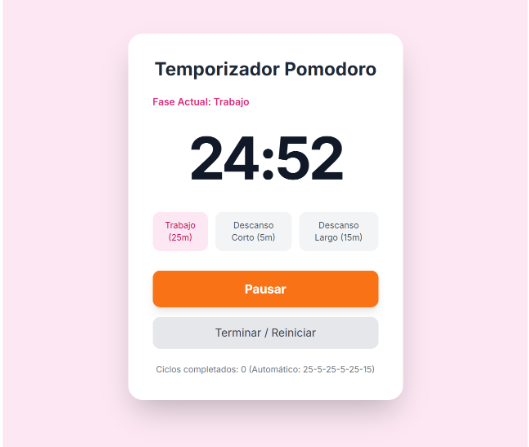
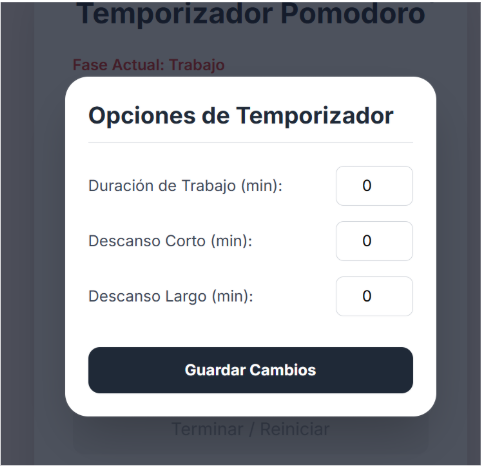
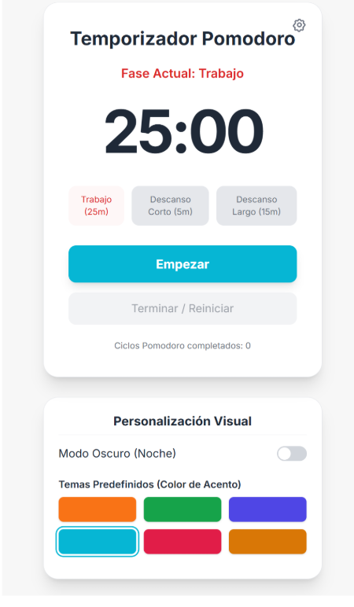
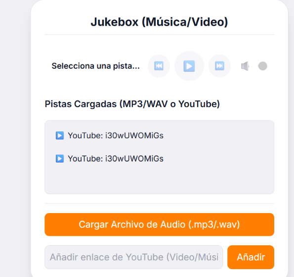
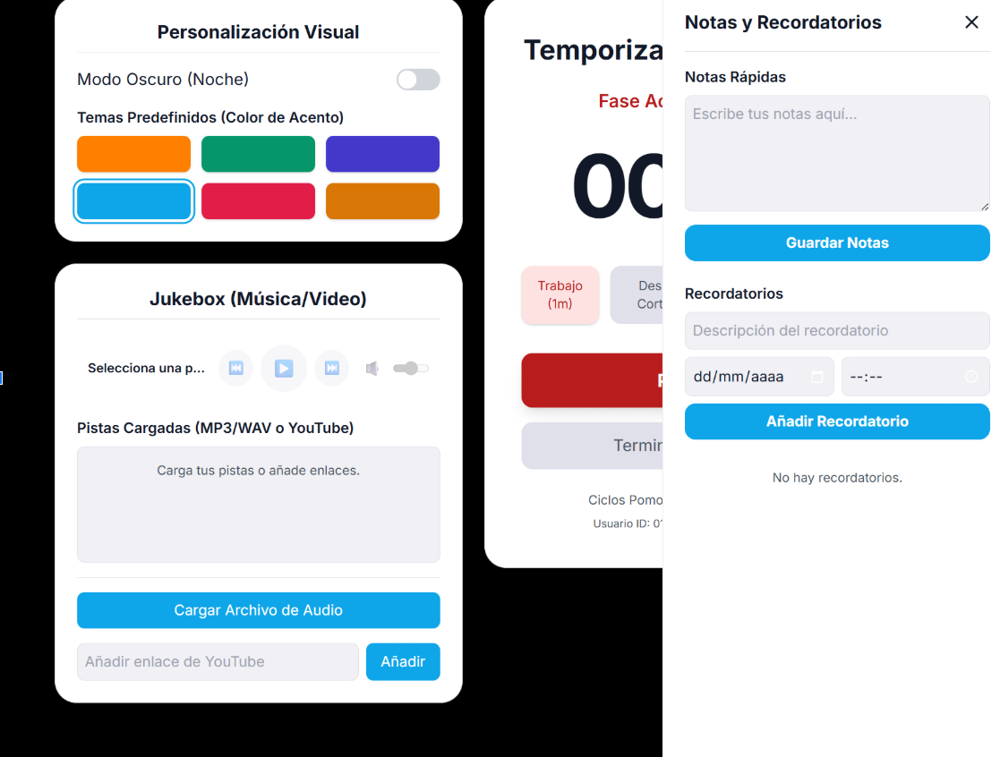

Prompt 1
Crear la aplicacion de pomodoro base.
Texto exacto:
"Eres una IA experta en desarrollo front-end con dominio avanzado en HTML5, CSS3 y JavaScript. Tu objetivo es construir aplicaciones web interactivas, optimizadas y multiplataforma en un único archivo HTML, incluyendo el CSS y JS dentro del mismo.
Se requiere crear un temporizador Pomodoro interactivo con intervalos personalizables y múltiples funciones complementarias. Todo el código debe estar contenido en un único archivo index.html, listo para ejecutarse localmente o en un navegador móvil/escritorio.
Generar la estructura base del Pomodoro con las siguientes funciones iniciales:
Temporizador con intervalos fijos:
25 minutos trabajo
5 minutos descanso corto
15 minutos descanso largo
Ciclo automático: 25-5-25-5-25-15 minutos.
Botones “Empezar” y “Terminar”.
Capacidad de seleccionar desde qué tipo de periodo iniciar (trabajo, descanso corto o largo).
Diseño responsive y adaptable a móvil y PC.
Orientación didáctica y limitaciones:
No uses librerías externas.
Todo el código (HTML, CSS, JS) debe ir en un solo archivo.
Incluye comentarios explicativos en el código.
No crear aún funciones de personalización o extras (se añadirán en próximos prompts).
Notas adicionales
Usar colores suaves y fuentes legibles. Preparar la estructura para ampliaciones futuras."Foto de lo generado:
Prompt 2
Añadir una seccion de opciones.
Texto exacto:
"Eres un desarrollador experto en UX/UI y JavaScript enfocado en apps productivas con personalización visual.
Se parte del Pomodoro funcional creado en el Prompt 1.
Añadir un panel de “Opciones” donde el usuario pueda:
Personalizar las duraciones de los tres intervalos.
Los tiempos se han de pasar automáticamente al siguiente sin que tu le des a nada
Guardar los cambios (en memoria local o variable global).
Cambiar el color secundario automáticamente según el tipo de periodo actual:
Trabajo → tono cálido (rojo/naranja)
Descanso corto → tono verde/azul
Descanso largo → tono púrpura o violeta
Orientación didáctica y limitaciones
Mantener la estructura de un solo archivo.
Todos los valores personalizados deben persistir mientras la página esté abierta.
Añadir comentarios para cada sección lógica.
Notas adicionales
Preparar el sistema de color para futuras integraciones de temas predefinidos."Fotos de lo generado:
Prompt 3
Añadir temas dinamicos y personalización.
Texto exacto:
"Eres un diseñador front-end especializado en temas dinámicos y personalización estética.
Ampliación del Pomodoro con personalización visual basada en modo de pantalla.
Implementar:
Interruptor día/noche (switch) que altere el esquema de colores global.
Seis temas predefinidos con combinaciones coherentes de colores primarios, secundarios y terciarios.
Todos los temas deben reaccionar correctamente al cambio de color secundario según el periodo actual.
Orientación didáctica y limitaciones
No usar librerías de UI externas.
Implementar los temas como clases CSS o variables :root.
Los cambios deben aplicarse instantáneamente.
Notas adicionales
Estructura las variables CSS pensando en su interacción con los colores por periodo."Foto de lo generado:
Prompt 4
Añadir un Reproductor de musica con archivos y enlaces a youtube.
Texto exacto:
"Eres un desarrollador multimedia experto en manejo de audio HTML5.
El usuario podrá escuchar música mientras usa el Pomodoro.
Añadir:
Sección “Música” donde se pueda:
Agregar enlaces de YouTube (solo almacenados, no incrustar directamente).
Subir archivos .mp3 o .wav.
Reproductor con botones de Play/Pause, Volumen y Selección de pista.
Recordar la pista seleccionada dentro de la sesión.
Orientación didáctica y limitaciones
Los enlaces de YouTube se almacenan pero no se reproducen automáticamente (por políticas).
Permitir reproducir los archivos locales cargados con Foto de lo generado:
Prompt 5
Añadir notas y eventos.
Texto exacto
"Eres un desarrollador de productividad en JavaScript con experiencia en localStorage y DOM.
El usuario podrá guardar notas personales y planificar descansos.
Crear un sistema con:
Bloc de notas para guardar texto libre.
Calendario sencillo donde anotar recordatorios o eventos.
Guardado automático de notas y eventos en la sesión actual.
Ajusta la interzar moviendo a la izquierda las opciones de personalización y el reproductor de música.
Orientación didáctica y limitaciones
No usar APIs externas.
Datos guardados localmente (variables o localStorage).
Diseño minimalista, limpio y funcional.
Formato
Dos secciones:
“Notas rápidas”
“Calendario con recordatorios”
Notas adicionales
Preparar estructura para exportar estos datos a JSON en el siguiente prompt."Foto de lo generado:
Prompt 6
Guardar todo desde la configuración en un archivo .json.
Texto exacto
"Eres un ingeniero front-end experto en persistencia local y exportación de datos.
Toda la configuración de la app (tiempos, temas, música, notas, etc.) se guardará en un perfil JSON.
Implementar:
Exportación de configuración completa a un archivo .json.
Carga de archivos .json para importar perfiles.
Validación de formato antes de importar.
Confirmación visual tras guardar o cargar.
Orientación didáctica y limitaciones
El JSON debe incluir: tiempos, colores, tema, música, notas y calendario.
No usar servidor ni backend.
Toda la lógica debe manejarse en JavaScript.
Formato:
Botones: “Guardar perfil” / “Cargar perfil”
Al cargar, aplicar instantáneamente los valores guardados.
Notas adicionales
Optimizar el flujo para que sea funcional en PC y móviles."